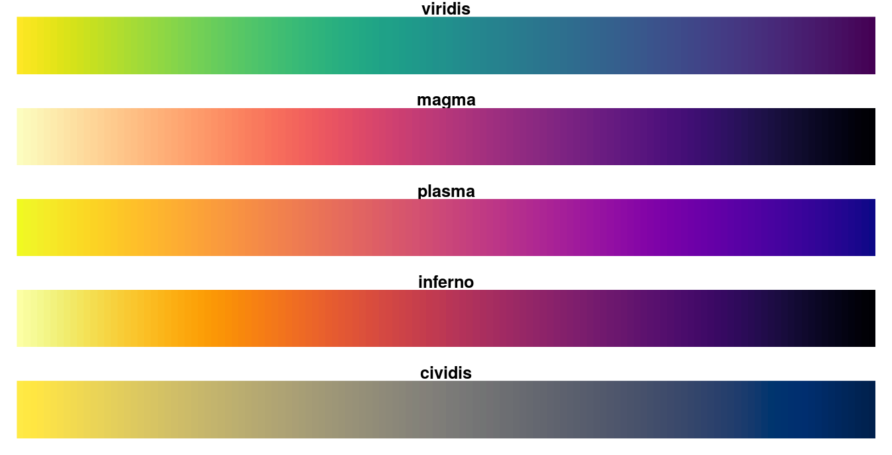

| viridis {viridisLite} | R Documentation |
This function creates a vector of n equally spaced colors along the
Matplolib 'viridis' color map created by Stéfan van der Walt
and Nathaniel Smith. This color map is
designed in such a way that it will analytically be perfectly perceptually-uniform,
both in regular form and also when converted to black-and-white. It is also
designed to be perceived by readers with the most common form of color blindness.
viridis(n, alpha = 1, begin = 0, end = 1, direction = 1, option = "D") viridisMap(n = 256, alpha = 1, begin = 0, end = 1, direction = 1, option = "D") magma(n, alpha = 1, begin = 0, end = 1, direction = 1) inferno(n, alpha = 1, begin = 0, end = 1, direction = 1) plasma(n, alpha = 1, begin = 0, end = 1, direction = 1) cividis(n, alpha = 1, begin = 0, end = 1, direction = 1)
n |
The number of colors (≥ 1) to be in the palette. |
alpha |
The alpha transparency, a number in [0,1], see argument alpha in
|
begin |
The (corrected) hue in [0,1] at which the viridis colormap begins. |
end |
The (corrected) hue in [0,1] at which the viridis colormap ends. |
direction |
Sets the order of colors in the scale. If 1, the default, colors are ordered from darkest to lightest. If -1, the order of colors is reversed. |
option |
A character string indicating the colormap option to use. Four options are available: "magma" (or "A"), "inferno" (or "B"), "plasma" (or "C"), "viridis" (or "D", the default option) and "cividis" (or "E"). |
A corrected version of 'viridis', 'cividis', was developed by Jamie R. Nuñez and Sean M. Colby. It is optimal for viewing by those with color vision deficiency. 'cividis' is designed to be perfectly perceptually-uniform, both in regular form and also when converted to black-and-white, and can be perceived by readers with all forms of color blindness.
Here are the color scales:

magma(), plasma(), inferno() and cividis() are
convenience functions for the other colormap options, which are useful the
scale must be passed as a function name.
Semi-transparent colors (0 < alpha < 1) are supported only on some
devices: see rgb.
viridis returns a character vector, cv, of color hex
codes. This can be used either to create a user-defined color palette for
subsequent graphics by palette(cv), a col = specification in
graphics functions or in par.
viridisMap returns a n lines data frame containing the
red (R), green (G), blue (B) and alpha (alpha)
channels of n equally spaced colors along the 'viridis' color map.
n = 256 by default, which corresponds to the data from the original
'viridis' color map in Matplotlib.
Simon Garnier: garnier@njit.edu, @sjmgarnier
library(ggplot2) library(hexbin) dat <- data.frame(x = rnorm(10000), y = rnorm(10000)) ggplot(dat, aes(x = x, y = y)) + geom_hex() + coord_fixed() + scale_fill_gradientn(colours = viridis(256, option = "D")) # using code from RColorBrewer to demo the palette n = 200 image( 1:n, 1, as.matrix(1:n), col = viridis(n, option = "D"), xlab = "viridis n", ylab = "", xaxt = "n", yaxt = "n", bty = "n" )